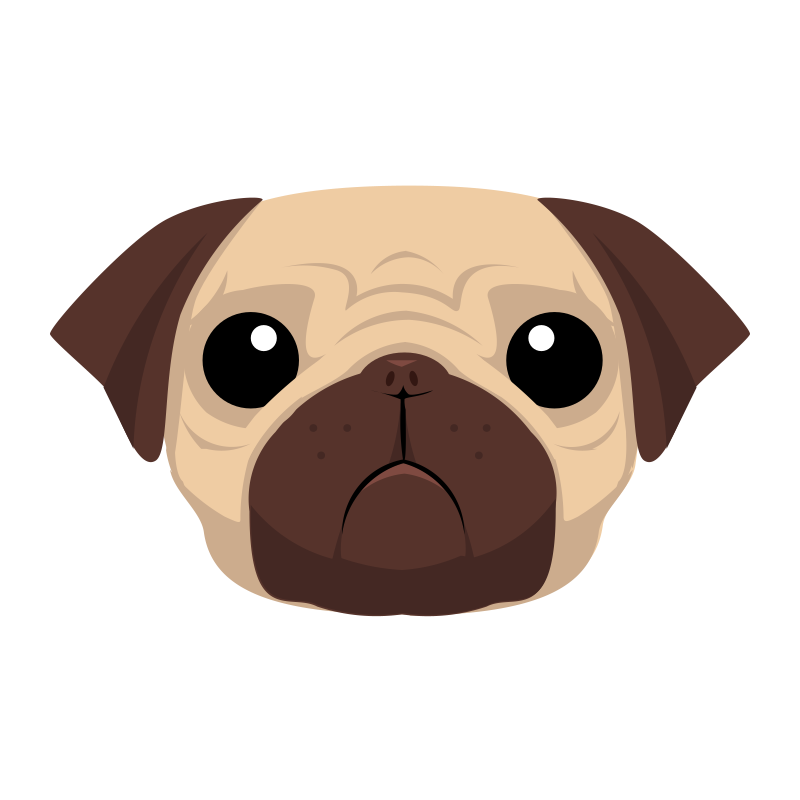

Hi! I'm Rise. I am a full-stack web developer proficient in ES6, React, Node, and PostgreSQL with six years' experience in STEM education. I am passionate about learning technologies and online learning.
About

My name is Rise, and I studied sociology in college because I thought I didn't have the talent for engineering, science, or math. I found my way into education through teaching ESL in Japan, and discovered there that I really liked being in the classroom. Upon returning to the US, I made my first steps into the STEM career that I secretly always wanted when I pursued a certification to teach high school math. As a teacher, my goal was to teach my students that their self-perceived weakness in math (or science, or tech) shouldn't hold them back from the careers they wanted.
Through my experience observing and assisting students in online learning environments, I also cultivated a passion for online learning and earned an MS in Online Instructional Design from Florida State University. This in turn led me to learn more about the code and technologies that power online learning tools and experiences. After completing a full-stack web development apprenticeship learning HTML, CSS, JavaScript, jQuery, React, Node, and Postgres, I am eager to be part of a team that helps to create solutions to improve learning experiences and further eliminate the limits of what learners think they can do.
If I won the lottery, I'd probably spend (some of) the money on learning something new. I love taking classes and learning new things, and some of my learning endeavors over the years (aside from learning to code) have included math, Spanish, Japanese, and sewing.
My other interests include fitness and nutrition, cooking, and cookie-decorating. As an adult, I have called Hawaii, Oregon, Canada, Japan, Florida, and New Mexico home. I currently live in beautiful Kailua, Hawaii, where I am a proud military spouse and mom of two.
Using the links, you can view my work on GitHub, find me on LinkedIn, or email me.
Experience
Technical Experience
-
Implemented major redesign for global retailer's ecommerce product landing page, increasing engagement by over 25% and "Add to Cart" rate by 5%; debugged longstanding issues in production and development environments; initiated Storybook site to display and document components specific to the product landing page.
-
Developed mobile app to store and send vehicle maintenance data.
-
Migrated 700+ news pages, 200+ faculty pages, and multiple other page and content types from Drupal to WordPress for a higher education organization.
-
Programmed Slack app to send customizable weekly Slack message to employees containing project forecast data.
-
Developed front-end app to retrieve quotable content from Slack.


- 

- Also, see a few of my Personal Projects, as well as my GitHub account.
Non-Technical Experience
-
Mentorship
Mentored apprentices in company's full-stack web developer apprenticeship program, holding weekly 1:1 meetings, reviewing code, and providing feedback about best professional and web development practices. Led and mentored military spouses to coordinate family outreach, fundraising, and social events for military active duty flying unit.
-
Instructional Design
Experience creating, launching, and maintaining instructional content in financial literacy and childbirth education.
-
Teaching
Developed and delivered high school and AP math curriculum, maintaining communication with students, parents, administrators, and guidance counselors, accommodating student needs.